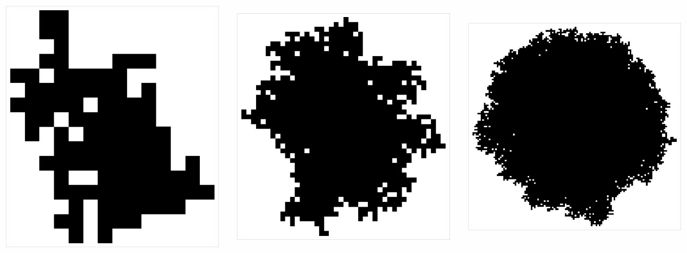
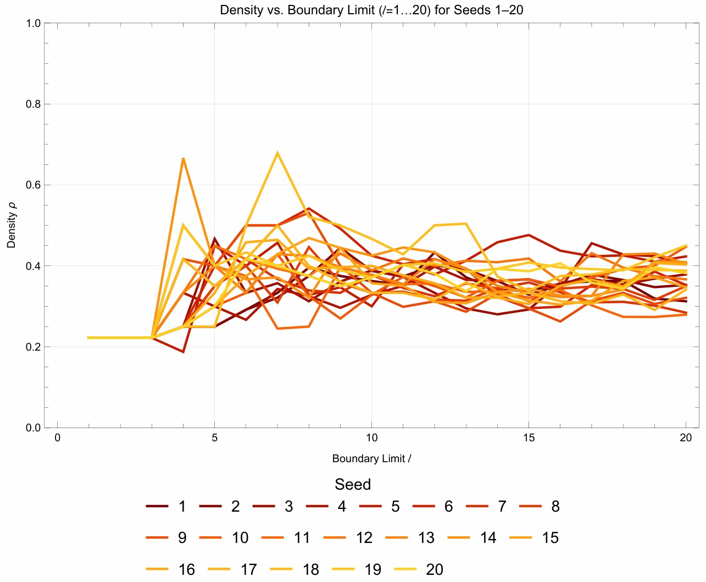
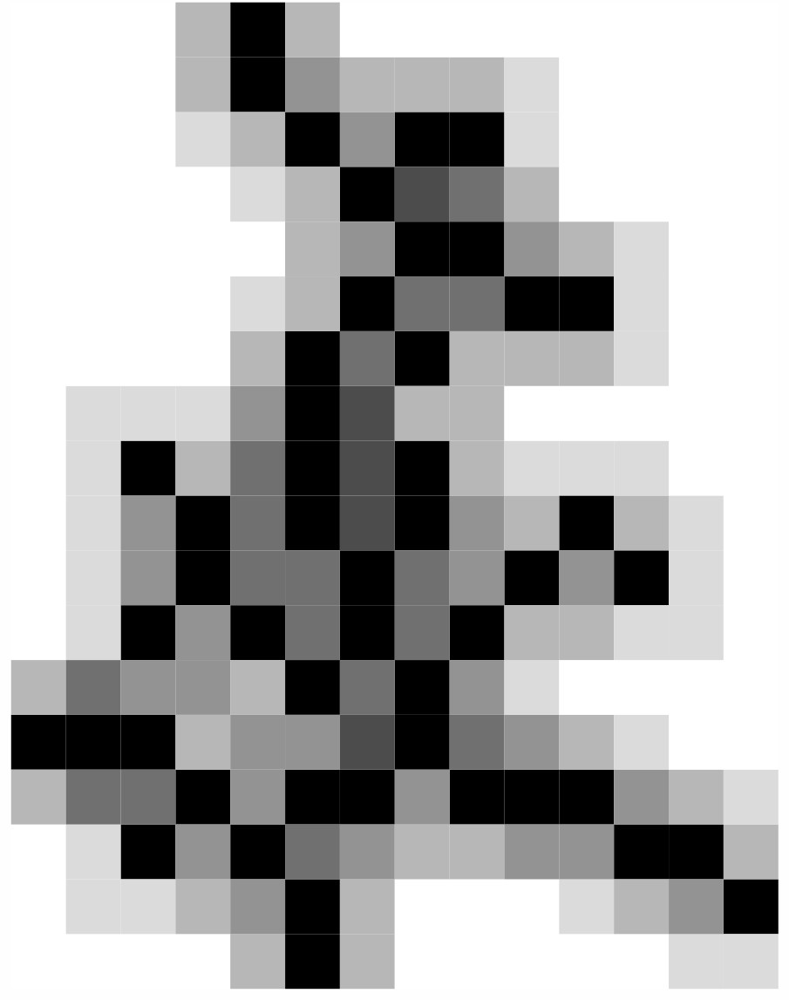
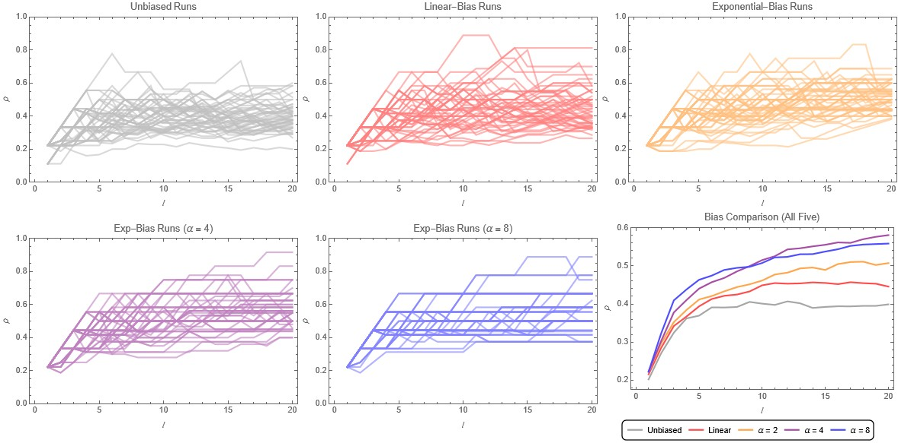
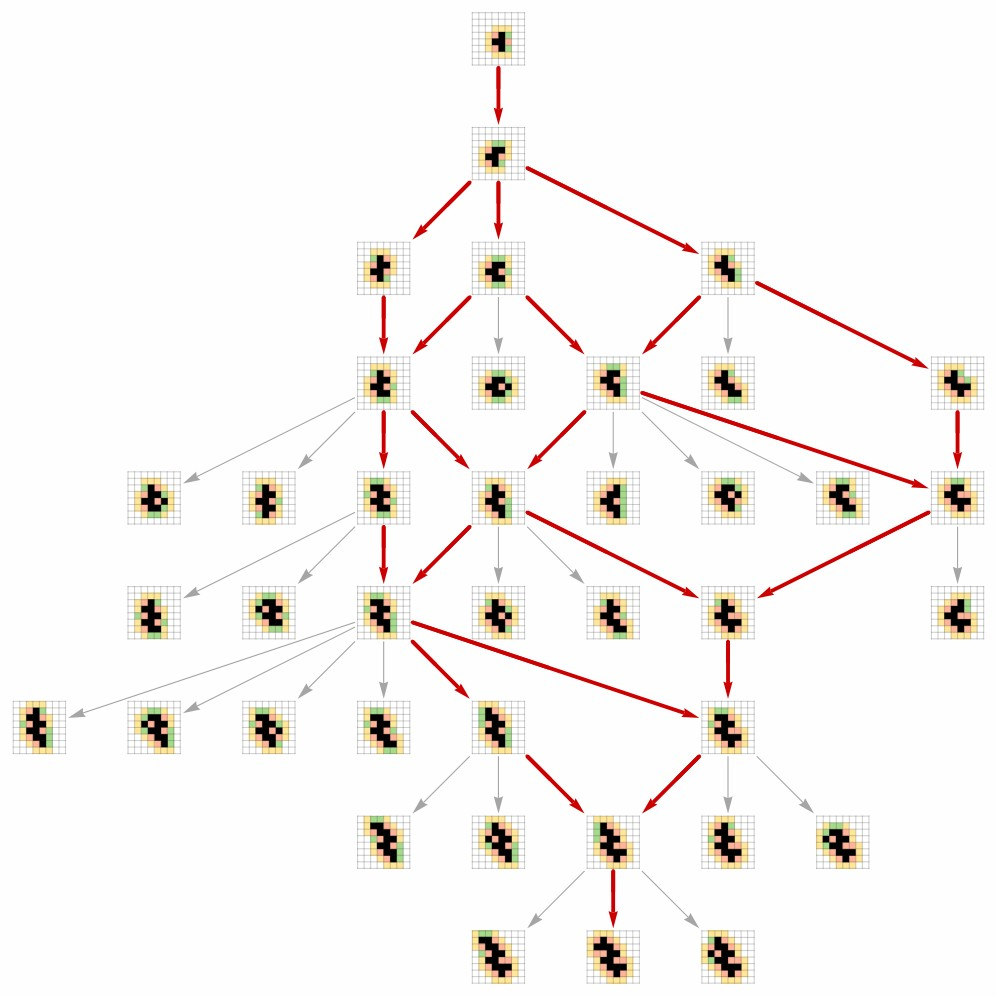
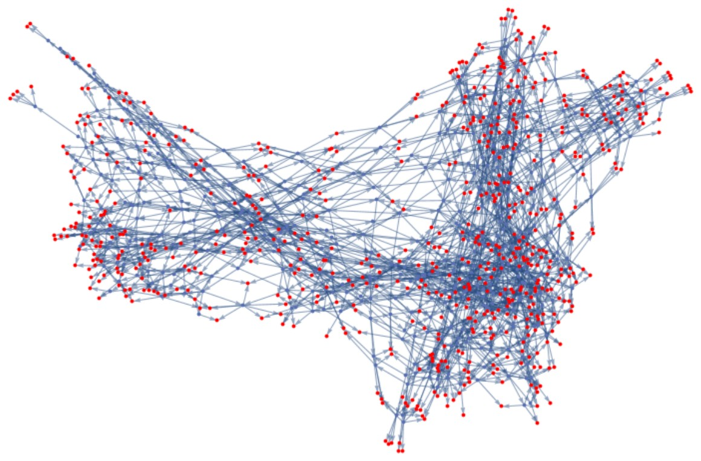
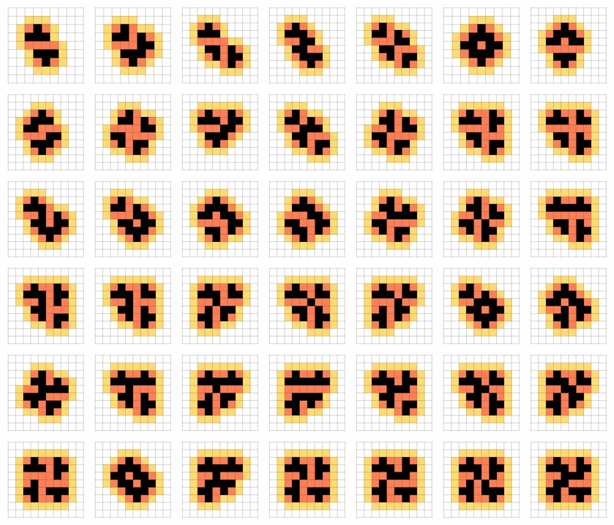

On the Density and Multiway Spectral Theory of Aggregation Systems
Abstract
We introduce a computational framework for exhaustive generation of biased cellular-automaton aggregation systems and discuss its influence on structural density. We present a modification of the AggregationSystem resource function which, for any given rule and initial grid, enumerates every possible single-cell update for the generations of a multiway state-space. We then identify terminal states (end-state nodes with no outgoing transitions) and overlay path-highlighting from the origin to each terminal via vertex- and edge-coloring to reveal emergent convergence patterns. These subgraphs are then analyzed via methodology from spectral graph theory, revealing patterns in connectivity, entropy, and other properties of multiway systems. Such analyses of discrete dynamical systems can be adapted to model a variety of physical and networked processes.
Introduction
Growth from simple rules
Cellular Automata (CA) models are representations of evolving systems on a state space where complex structures may emerge from simple local rules. Aggregation systems are a type of cellular automata such that the set of defined rules does not include the removal of previously occupied cells, leading to structures where new cells get added around a cell following a ruleset related to its neighbors.

Shown above is the complexity-minimized “Eden model,” where the initial state of the system is one black cell, and for each iteration, a new black cell is randomly added on an unoccupied square vertically or horizontally adjacent to an existing cell. We can also specify the number(s) of neighbors of a cell required for that cell to be eligible for growth. This is referred to as a “totalistically constrained growth.”
Multiway systems model every possible path of evolution for a given system, where one state can lead to multiple unique ones. In a multiway system, terminal states are vertices with no outgoing edges.
Density
Randomness in bounded growth
We define a boundary limit of growth as a two-dimensional quadrilateral grid where there initially exists a starting cell or “nucleation site” of an aggregation system. Said cell then sequentially evolves into an emergent structure of occupied cells whose density is formally calculated as the ratio of occupied cells over the total area, providing a metric for comparative analysis of discrete aggregation behaviors across varied conditions and parameters.

The variability introduced by randomness is represented by different colored curves corresponding to each seed. Despite a noticeable initial trend, the average values of these seeds converge toward a single value, showing an unpredictability and lack of long-term density trend.
Bias
Weighted growth
We also define functions for aggregation system CA generation such that a bias is implemented via a “weighting” rule in accordance to the number of neighbors an empty candidate cell has. The integer values of the number of neighbors for a given candidate cell is mapped onto the weight property of the RandomChoice function. For instance, an unoccupied cell with three neighbors will be three times more likely to be chosen for placement when compared to another with one neighbor.

Further bias via weighting can be done by applying exponents to each of the number of neighbors, thereby creating a larger gap between each numerator and more favorably biases cells with more neighbors. To compare the densities between non-, linear-, and exponential-biased aggregation plots, aggregation systems of seeds 1 through 50 were run until they fulfill a boundary of 20 cells.

As the bound size increases, there is a clear trend where the average density value of the greatest-value exponential-biased aggregation approaches the greatest value, followed by the linear- and non-biased aggregations, respectively. This is directly related to the tendency of the bias to keep adding to existing clusters on the aggregation plots. Notice an interesting pattern that emerges once the exponential bias factor reaches greater numbers. As the boundary size reaches beyond approximately 10 cells, the 8th power exponential bias returned lower average density values than the 4th exponential bias.
Multiway graphs
Finding terminal states
We take a known terminal state found at the ninth iteration of the 8-neighbor rule {2} aggregation multiway system. Examining a part of the multiway system more closely, we see that there exists a state at the end of the highlighted graph path that restricts any further growth. As the rules require exactly two neighbors for another cell to be placed and there is no cell that fulfills this requirement, the set of candidate cells is empty, and this branch of the multiway system is terminated, hence a terminal state.

This terminal state is quite rare in our multiway system. Taking the ratio of all possible paths in the extracted subgraph to that of the multiway system yields a probability of ~1.5% of reaching this state. This means that there is quite a weak notion of confluence seen from the lack of convergence towards a certain state.

Examining every path toward all the terminal candidates, we find that vertex 316 occurs at the ninth iteration, proving to be our previously known terminal state. This section of the terminal identification process demonstrates the possibility to “work backwards,” or in other words, post-generation, toward any terminal state in a multiway system.
Spectral graph theory
Connectivity and entropy
Spectral graph theory provides a continuous lens on the discrete dynamics of the aggregation process, capturing global features like connectivity, growth complexity, and entropy. The algebraic connectivity is defined as the second-smallest eigenvalue \(\lambda_2\) of the (combinatorial) Laplacian \(L = D - A\) of an undirected graph. Equivalently, by the Courant–Fischer theorem,
Spectral entropy measures the spread or disorder of a graph’s spectrum. Given the eigenvalues \(\{\mu_i\}\) of a chosen matrix (e.g. the normalized Laplacian), form a probability distribution \(p_i = \mu_i / \sum_j \mu_j\), then compute
High \(H\) indicates a rich and complex mix of frequencies (structural irregularity), while low \(H\) reflects a more uniform or symmetric spectrum.

Conclusions
This project demonstrated how different bias mechanisms: unbiased, linear, and exponential, affect the density evolution of aggregation systems over time. These results highlight the sensitivity of the system to local attachment preferences and suggest that tunable bias could serve as a controllable parameter for steering emergent material properties in simulated or real-world self-assembly processes. In addition to structural analysis, this work demonstrated how multiway systems can be used to model the dynamics of aggregation processes, revealing the rich combinatorial and geometric structures that emerge from simple local rules.
Looking ahead, the same approaches and methods can be scaled to larger lattices, higher dimensions, or more intricate rule sets, making it a versatile platform for the study of diverse discrete dynamical systems.
Acknowledgements
This work would not have been possible without the guidance and insight of my mentor Adam Millar through every stage of the project. I am grateful to the other mentors and teaching assistants of the Wolfram Summer Research Program who aided me during this project, including, in no particular order; Lyman Hurd, Jason Sonnenberg, Anoushka Munchhal, and William Choi-Kim, all of whom provided kind assistance and thoughtful discussions throughout the process. I sincerely thank the program directors for providing all research scholars with this invaluable opportunity. Finally, I extend my appreciation to Stephen Wolfram whose foundational work and vision made this project possible.
BibTeX
@misc{jittham2025aggregation,
title = {On the Density and Multiway Spectral Theory of Aggregation Systems},
author = {Jittham, Thantham},
year = {2025},
howpublished = {Wolfram Community, Wolfram High School Summer Research Program},
url = {https://community.wolfram.com/t/wsrp25-on-the-density-and-multiway-spectral-theory-of-aggregation-systems/25762}
}